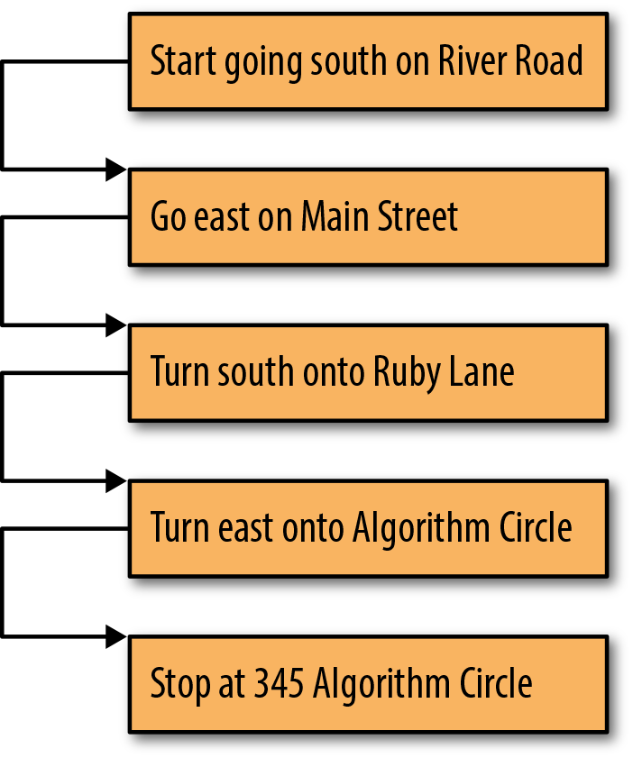
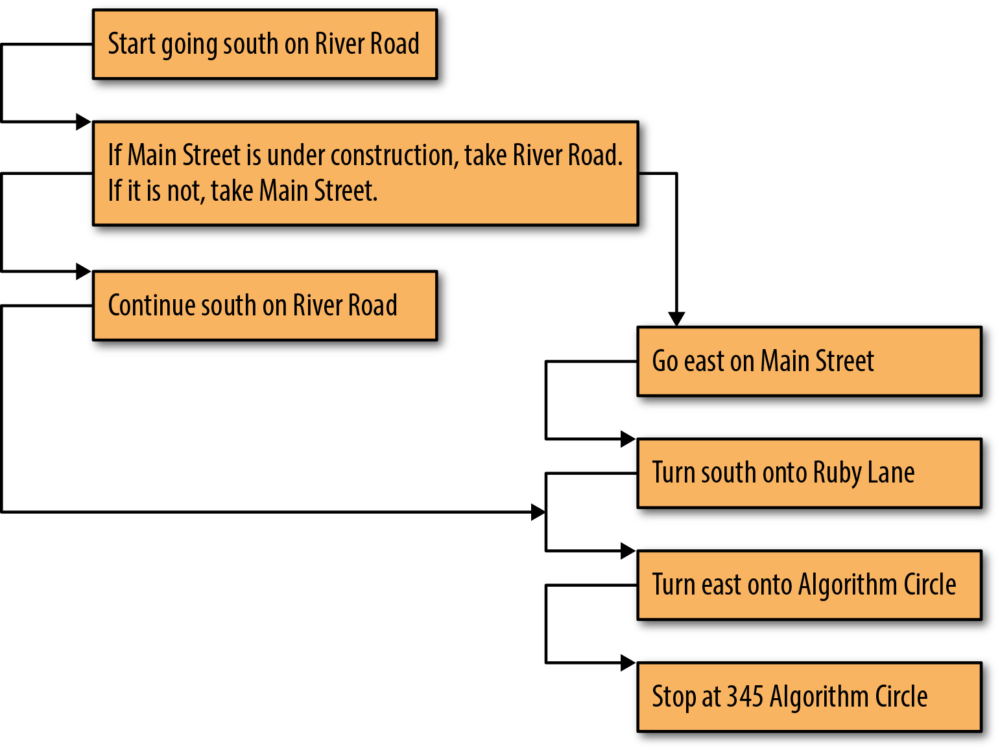
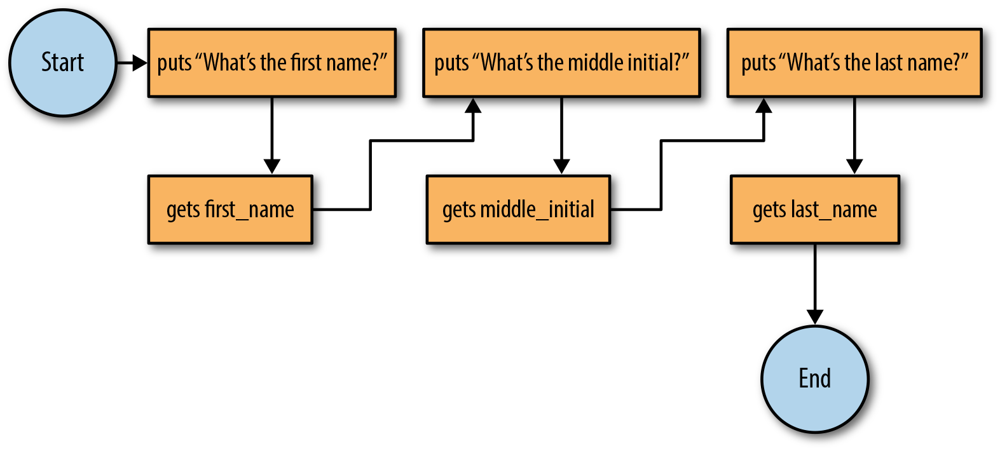
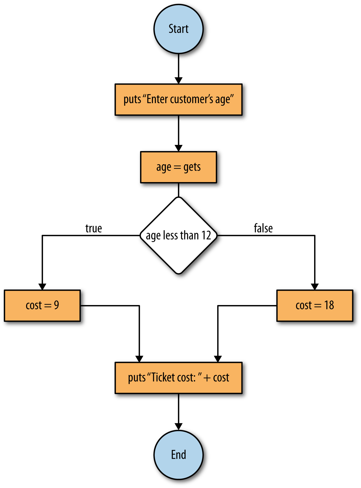

The preceding chapter introduced core programming elements, including variables of various data types and the process of input and output. Now it is time to use these concepts within a new context: conditional structures. This chapter explains the logic of conditional structures and presents the tools that allow them to work. These tools include the if statement, the elsif statement, and the case statement. We will also address debugging.
4.2 Flow of Execution
Logic Flow
Every algorithm has some type of logic flow. It is very easy to demonstrate logic flow using a flowchart. Let’s revisit the algorithm for driving from but this time illustrate it using the flowchart in .

Flowchart directions of
To properly move through the flowchart, start in the box that has the word Start in it, perform the step in that box, and then follow the arrow to the next box. Continue this process until there is nowhere else to go in the chart. If you walked through this flowchart, you would see that each step is performed once before moving on to the next step. This is known as one-directional flow. Algorithms with a one-directional logic flow do not really warrant a flowchart. However, not all algorithms are that simple, and not all flow is in one direction; that is, multiple possible execution flows exist. For example, shows a non-one-directional logical flow that models a choice between the two directions presented in Figures and found in .

Multiple-path logic flowchart
To move through the flowchart in , start in the uppermost box and follow the arrow to the next box. In this box, there is a condition and two arrows, but you pick one based on the outcome of the condition. After this, move on to the next box, and the rest of this diagram is one-directional. This type of flow, where a certain condition must be met to carry out the next step, is called conditional flow. We will talk about this in more detail later in the chapter. Also, later in the chapter, we refine the flowchart structure.
4.3 Conditional Control
When more than one flow option exists in the control flow, it is called a conditional control flow. Whenever a certain condition is met, its respective flow option is followed. A condition is an expression defined using relational and Boolean operators that evaluate to either true or false. The list and interpretation of the supported relation operators is presented in .
Relational operators
Relational operator
Meaning
==
Equal to
!=
Not equal to
<
Less than
>
Greater than
<=
Less than or equal to
>=
Greater than or equal to
An example of the use of relational operators to form relational expressions is shown in .
To create complex expressions, simple relational expressions are combined by using Boolean operators. Two Boolean variable operators available in Ruby are and and or. The operator and evaluates to true only if both operands are true. In contrast, the operator or evaluates to true if either or both operands are true. To ensure the precedence you desire, a good programming practice is to use parentheses. A truth table is presented in .
Truth table for and and or
A
B
True
True
True
True
True
False
False
True
False
True
False
True
False
False
False
False
Recall the negation operator (!) that appears in the not equal to relational operator. This operator is a simple negation and works on any true or false expressions or conditionals, as shown in . Sometimes the negation operator ! is denoted by the word not. In fact, the fifth example in the figure, regardless of the Boolean values you set for first and second, will always evaluate to true. This is called a tautology.
Boolean expressions example
irb(main):001:0> !false
=> true
irb(main):002:0> !(true or false)
=> false
irb(main):003:0> first=true
=> true
irb(main):004:0> second=false
=> false
irb(main):005:0> (first and second) or !(first and second)
=> true
Control Flow
Control flow is logic flow in the context of a program. Just as algorithms start somewhere and show an order of steps until the end of the algorithm, so does a program. Programs have a starting instruction, and then instructions are executed in a specific order, and eventually the program ends. We use a flowchart to illustrate control flow. revisits the names example to illustrate control flow with flowcharts. Note that the start and endpoints of the algorithms are indicated by circular shapes (circles or ovals depending simply on the length of text contained).
This type of flow is known as one-directional control flow. Programs are not limited to one-directional control flow. In this chapter, we discuss programming constructs that allow us to change program control flow. Understanding this control flow is essential to being able to create and test (debug) an implementation of an algorithm.

Control flowchart
4.4 If-Then-Else Statements
Ruby uses an if statement for basic conditional control flow.
Gem of Wisdom
An If-Then-Else statement or its equivalent is found in every programming language.
The basic form of an if statement is shown in .
If statement
1 if (condition)
2 # section 1
3 end
The condition is a logical expression, as described previously; in , section 1 is executed when the condition evaluates to true, and it is skipped when the condition evaluates to false. An example of using the if statement is shown in . Given a number from the user, the program determines if the value is even. If it is, the program will print “Even” to the screen.
Determine if the number is even
1 # if a number is even, print out "Even"
2 puts "Enter a number" # print message
3 number = gets.to_i # get number as an integer
4 if (number % 2 == 0) # check if even
5 puts "Even"
6 end
Assume the user inputs a value of 11. In this case, number will be equal to 11 when we try to evaluate the expression number % 2 == 0. This means that the flow option, shown on line 5, will not execute because the expression 11 % 2 == 0 will evaluate to false since 11 % 2 is equal to 1, not 0. Thus, nothing will be printed to the screen. If the user enters 10, then 10 % 2 ==0 will evaluate to true, meaning puts ''Even'' will be executed; the screen will display “Even.”
The if statement can be extended with the use of the else. The general form for the if-else statement can be seen in .
If-else statement
1 if (condition)
2 # section 1
3 else
4 # section 2
5 end
This is similar to the first if statement presented; however, now there is a second flow option. In this case, if the original condition is not met, the second flow option is taken. For example, we can create a program that will tell us how much a movie ticket will cost based on a customer’s age. Anybody under age 12 would get a discounted rate. We will call our program theater.rb and use the code shown in . Note that on line 13, we introduce the concatenation of two strings by using the + operator between them.
Theater 1
1 puts "Enter the customer's age: "
2 # Get an integer age value from the user
3 age = gets.to_i
4
5 # Determine the cost based on age
6 if (age < 12)
7 cost = 9
8 else
9 cost = 18
10 end
11
12 # Print out the final cost
13 puts "Ticket cost: " + cost.to_s
The logic flow of the code in is shown in . Note that another new construct in our flowchart uses diamonds. Diamonds represent conditional points. Each option of the condition is designated on an outgoing branch. The algorithm follows the branch corresponding to the value of the conditional.
Gem of Wisdom
Make sure you can step through and understand each and every step. Play computer and consider different values for age; trace each step. What if age is 20? What if age is 5? Are there any cases where this program will not work?

If-else statement flowchart
Testing Conditional Flow
Now that we have a program whose logic forks into separate paths, it is important to make sure that both forks work.
The movie theater will look unkindly on accidentally giving everybody a discount, especially if these moviegoers are not under age 12! We test the code stored in the file theater.rb by running at least one test in each flow option of logic:
$ ruby theater.rb
Enter customer's age:
8
Cost: 9
To test this for a higher value, we try again:
$ ruby theater.rb
Enter customer's age:
25
Cost: 18
Most errors occur on edge or boundary conditions. In our example, 12 is where the price switch happens. As such, it is important to test the value 12 itself.
$ ruby theater.rb
Enter customer's age:
12
Cost: 18
If this is not what you expected, then you are used to the way many companies work: if a person is age 12 or under, the person is considered a child. If the movie theater wants to abide by this standard, we will have to modify our conditional test to become less than or equal to.
Like most computer problems, there are many ways to achieve the same result. We could have changed the conditional to be “age < 13”. However, since “age <= 12” better represents the real-world concept, it makes for code that is far more readable. The corresponding version of the program is presented in .
Theater 2
1 puts "Enter the customer's age: "
2 # Get an integer age value from the user
3 age = gets.to_i
4
5 # Determine the cost based on age
6 if (age <= 12)
7 cost = 9
8 else
9 cost = 18
10 end
11
12 # Print out the final cost
13 puts "Ticket cost: " + cost.to_s
Elsif Statements
Conditional flow can have more than two flow options by using elsif statements. The flowchart in shows multiple conditional flow and follows the code template shown in .
Only one of these four sections shown in will be executed. If none of the three conditions are met, the fourth section will run. Note that the first satisfied (true) condition encountered will be executed regardless of whether multiple conditions evaluate to true. With elsif statements, it is possible to expand to as many flow options as needed. Like the regular if statement, the final else is optional. If the movie theater decided to have different rates for children and senior citizens, the elsif statement would come in handy, as shown in .
Theater 3
1 puts "Enter the customer's age: "
2 # Get an integer age value from the user
3 age = gets.to_i
4
5 # Determine the cost based on age
6 if (age <= 12)
7 cost = 9
8 elsif (age >= 65)
9 cost = 12
10 else
11 cost = 18
12 end
13
14 # Print out the final cost
15 puts "Ticket cost: " + cost.to_s
The movie theater, however, may likewise decide to sell tickets at the children’s discounted price for senior customers as well. We modify our example to include age >= 65in the discounted flow option, as in . Note that in this example, we use multiple conditions combined with a Boolean operation to form a single condition.
Advanced conditionals
1 puts "Enter the customer's age: "
2 # Get an integer age value from the user
3 age = gets.to_i
4
5 # Determine the cost based on age
6 if ((age <= 12) or (age >= 65))
7 cost = 9
8 else
9 cost = 18
10 end
11
12 # Print out the final cost
13 puts "Ticket cost: " + cost.to_s
4.5 Case Statements
Instead of using if-elsif statements, Ruby has another statement called case for handling multiple options. This statement is useful when presenting users with a large menu of different choices. The case statement is expressed in .
Case statement
1 case
2 when (expression1)
3 # section 1
4 when (expression2)
5 # section 2
6 else
7 # section 3
8 end
After looking at a case statement in use, you may be wondering what would happen if multiple when clauses evaluate to true. Case statements are processed in order, so the first condition that evaluates to true has its corresponding flow option execute, skipping over all others. As noted earlier, this processing order is identical to the cascaded if-else statements.
We now update the movie theater example, where children, adults, and senior citizens have differing rates to make use of the case statement as shown in .
Theater 4
1 puts "Enter the customer's age: "
2 # Get an integer age value from the user
3 age = gets.to_i
4
5 # Determine the cost based on age
6 case
7 when (age <= 12)
8 cost = 9
9 when (age >= 65)
10 cost = 12
11 else
12 cost = 18
13 end
14
15 # Print out the final cost
16 puts "Ticket cost: " + cost.to_s
4.6 Debugging
Basic debugging is a skill that every programmer must learn. When your program is malfunctioning and you do not have a clue where the error is located, you can use multiple puts statements to check the value of your variables at different times. Modify the code in to use the assignment operator (=) instead of the comparison operator (<=) in the first conditional statement, as in .
Debugging example 1
1 puts "Enter the customer's age: "
2 # Get an integer age value from the user
3 age = gets.to_i
4
5 # Determine the cost based on age
6 case
7 # '=' is assignment NOT equality test '=='
8 when (age = 12) then
9 cost = 9
10 when (age >= 65) then
11 cost = 12
12 else
13 cost = 18
14 end
15
16 # Print out the final cost
17 puts "Ticket cost: " + cost.to_s
If you run the example, it will not matter what age you input; it will always output the ticket cost as 9. This is because you are not comparing age to the integer 12 but instead assigning 12 to age, which is something that will evaluate to true. Edit the program to match .
Debugging example 2
1 puts "Enter the customer's age: "
2 # Get an integer age value from the user
3 age = gets.to_i
4 # DEBUG
5 puts age
6
7 # Determine the cost based on age
8 case
9 # '=' is assignment NOT equality test '=='
10 when (age = 12) then
11 cost = 9
12 when (age >= 65) then
13 cost = 12
14 else
15 cost = 18
16 end
17 # DEBUG
18 puts age
19
20 # Print out the final cost
21 puts "Ticket cost: " + cost.to_s
By adding puts statements before the case statement and at the end of the program, you are checking what value is stored after it is entered and after the case statement was executed. If you run the new program, you will see that the first output will equal whatever age value you originally entered. However, at the end of the program, the puts will output the value 12, no matter what value was previously entered for age.
From this, you can infer that the value of age changed somewhere between the two puts statements. As you remember, we changed the comparison operator (<=) to the assignment operator (=). The assignment operator = is often mistyped when programmers meant to use the comparison operator ==.
Using puts statements to output key values is one of the simplest yet most effective ways to debug a program.
4.6.1 Alternative Styles of Debugging
Debugging your program includes printing intermediate steps. Further, it is highly advised—or more accurately, required—that you debug your program one portion at a time, rather than the entire program as a whole.
Another approach relies on one or more constants, possibly named DEBUG_MODULE_1, DEBUG_MODULE_2, and so on. In such an approach, these debugging flag constants are defined at the beginning of the program and set initially to true. In each corresponding section of the code, the programmer writes an if statement with the debugging constant as the flag that determines whether a puts statement is executed. Once the particular section of the program being tested is determined to be correct, the constant is set to false. This approach is shown in .
Debugging example 3
1 # Flag for debugging (change to false when finished debugging)
2 DEBUG_MODULE_1 = true
3
4 puts "Enter the customer's age: "
5 # Get an integer age value from the user
6 age = gets.to_i
7
8 # Determine the cost based on age
9 if DEBUG_MODULE_1
10 puts age
11 end
12 case
13 # '=' is assignment NOT equality test '=='
14 when (age = 12) then
15 cost = 9
16 when (age >= 65) then
17 cost = 12
18 else
19 cost = 18
20 end
21 if DEBUG_MODULE_1
22 puts age
23 end
24
25 # Print out the final cost
26 puts "Ticket cost: " + cost.to_s
Line 2 defines the constant to be used as our debug flag. Lines 9–11 and 21–23 represent code that should be run only during debug mode to help ensure that the program is running correctly. Compare the output of the code with DEBUG_MODULE_1 set to true and false.
4.7 Summary
We discussed how to implement conditional execution in Ruby. The if statement can cover simple conditions, and the case statement can cover more complex conditions. Relational operators, outlined in , were introduced, as well as their combinations and negations.
4.7.1 Key Concepts
Every program follows a control flow, which is dictated by the logic flow of its algorithms. Logic flow and control flow can be better understood in a flowchart, and are often one-directional or conditional.
Relational operators are the key to creating conditional flow. An expression that uses a relational operator is known as a relational expression.
Another way to create conditional flow is through the use of advanced conditional structures. This is done by employing special statements, such as if, elsif, and case.
4.7.2 Key Definitions
Flowchart: A tool for understanding the logic flow of an algorithm or the control flow of a program.
Logic flow: The order in which an algorithm performs key steps:
One-directional flow: When the logic flow of an algorithm follows a one-directional order (i.e., a straight line)
Conditional flow: When the logic flow of an algorithm follows a conditional order (i.e., different conditions lead to different paths)
Relational expression: An expression that uses a relational operator.
4.8 Exercises
Prompt the user for an integer and test if it’s even or odd. Consider using the way Ruby rounds operations on integers when appropriate. Save this program in a file called compare.rb.
Modify compare.rb so that it:
Prompts the user for an integer between 5 and 10 (inclusive) and displays whether or not the input was correct. Implement this using an if/elsestatement.
Prompts the user for an integer between 5 and 10 and then informs the user if the integer was below the range, in the range, or above the range. Implement this using a case statement.
Write a program that, given two points on a two-dimensional graph, outputs a message (string) if the line that connects them is horizontal or vertical, or if the slope is positive or negative.
Write a program to solve a system of two linear equations. A linear equation is a mathematical equation that describes a line through its slope (m) and its y-intercept (b), and it will take the form y = mx + b. Make sure to account for the cases where there is no solution or where there are an infinite number of solutions.
The unit pulse function, d[n], is very important in digital signal processing. This function is defined for integers only. It is equal to 1 when n is 0, and it is equal to 0 when n is any other integer. Write a program that prompts the user for an integer n, and returns the value d[n].
Prompt the user for integers x, y, and z. Implement the decision tree shown in based on the values using if statements. Output how many of the variables are greater than 0. Note: each right flow option represents false, and each left flow option represents true.